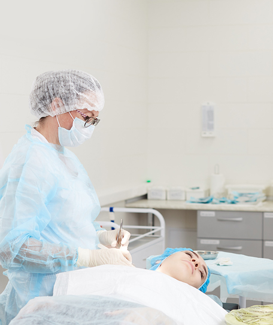
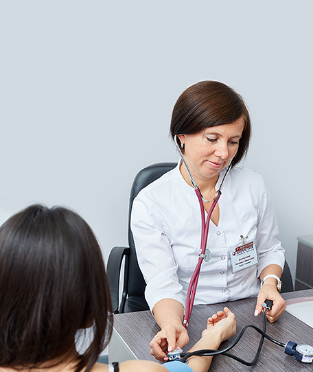
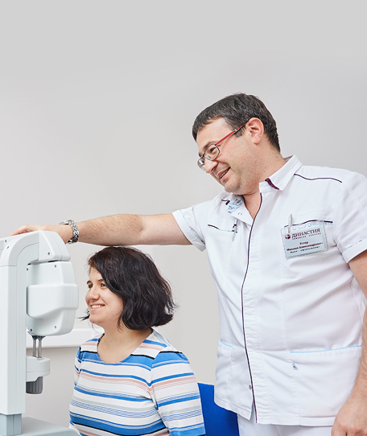

Терапевт
Терапевт – это врач широкого профиля, специализирующийся на ранней диагностике множества заболеваний. Терапевт ведет первичный прием и лечение пациентов, а при необходимости дает направление к более узкоспециализированному специалисту.
Если вы не знаете, к какому врачу обратиться, то начать нужно именно с терапевта.
Об отделении
Может показаться, что роль данного врача – лишь координация пациентов к специалистам более узкого профиля. Это не так. Терапевты диагностируют и лечат инфекционные, сердечно-сосудистые заболевания, болезни органов дыхания, пищеварения, мочевыделения, эндокринной системы и другие.
Широкая специализация позволяет видеть клиническую картину в целом и уметь отличать признаки от причин заболевания. Например, проблемы с кожей (сфера дерматовенерологов) нередко вызваны проблемами с кишечником (специализация гастроэнтерологов). Даже если терапевт не будет лечить заболевание сам, он направит вас к специалисту максимально точно, что особенно важно при заболеваниях, способных переходить из острой формы в хроническую.
Специалисты направления
Стоимость услуг
Консультации
- Консультация врача-терапевта, инфекциониста Малкиной О.И.1400 руб
- Консультация врача-терапевта, гастроэнтеролога Заплатиной Н.И.1400 руб
- Консультация врача-терапевта, кардиолога ВагановойА.В1500 руб
Вызов на дом
- Выезд в пределах Екатеринбурга3000 руб
- Выезд за черту города, в пределах 40 км.4000 руб
Записаться на прием
Обратите внимание, поля со звездочкой * – обязательны для заполнения.
Вопрос-ответ
Да, вы можете вызвать врача на дом в пределах Екатеринбурга, или за пределы города до 40 км. Здравствуйте. Все наши врачи обладают высокой квалификацией и большим опытом, что зачастую является залогом точной постановки диагноза и эффективного лечения.
Здравствуйте. Да, вы можете вызвать врача на дом в пределах Екатеринбурга, или за пределы города до 40 км.
Здравствуйте. Да, вы можете вызвать врача на дом в пределах Екатеринбурга, или за пределы города до 40 км.
Да, вы можете вызвать врача на дом в пределах Екатеринбурга, или за пределы города до 40 км. Здравствуйте. Все наши врачи обладают высокой квалификацией и большим опытом, что зачастую является залогом точной постановки диагноза и эффективного лечения.
Да, вы можете вызвать врача на дом в пределах Екатеринбурга, или за пределы города до 40 км. Здравствуйте. Все наши врачи обладают высокой квалификацией и большим опытом, что зачастую является залогом точной постановки диагноза и эффективного лечения.
Здравствуйте. Да, вы можете вызвать врача на дом в пределах Екатеринбурга, или за пределы города до 40 км.
Здравствуйте. Да, вы можете вызвать врача на дом в пределах Екатеринбурга, или за пределы города до 40 км.
Об отделении
Может показаться, что роль данного врача – лишь координация пациентов к специалистам более узкого профиля. Это не так. Терапевты диагностируют и лечат инфекционные, сердечно-сосудистые заболевания, болезни органов дыхания, пищеварения, мочевыделения, эндокринной системы и другие.
Широкая специализация позволяет видеть клиническую картину в целом и уметь отличать признаки от причин заболевания. Например, проблемы с кожей (сфера дерматовенерологов) нередко вызваны проблемами с кишечником (специализация гастроэнтерологов). Даже если терапевт не будет лечить заболевание сам, он направит вас к специалисту максимально точно, что особенно важно при заболеваниях, способных переходить из острой формы в хроническую.
- Лечение
- Диагностика
- Программы
Наши отделения
 Сейчас открыто
Сейчас открытоФилиал работает ежедневно с 07:30 до 20:00
Клиника расположена в отдельном 4-х этажном здании на углу ул. Мамина-Сибиряка и ул. Карла Маркса, напротив Екатеринбургского Зоопарка. Вход в клинику расположен в правой части здания. Если вам необходим пандус – он находится в левой части здания.
Забор анализов ежедневно с 07:30. Вакцинация ежедневно.
- Сейчас открыто
Филиал работает ежедневно с 07:30 до 20:00
Клиника расположена в отдельном 4-х этажном здании на углу ул. Мамина-Сибиряка и ул. Карла Маркса, напротив Екатеринбургского Зоопарка. Вход в клинику расположен в правой части здания. Если вам необходим пандус – он находится в левой части здания.
Забор анализов ежедневно с 07:30. Вакцинация ежедневно.